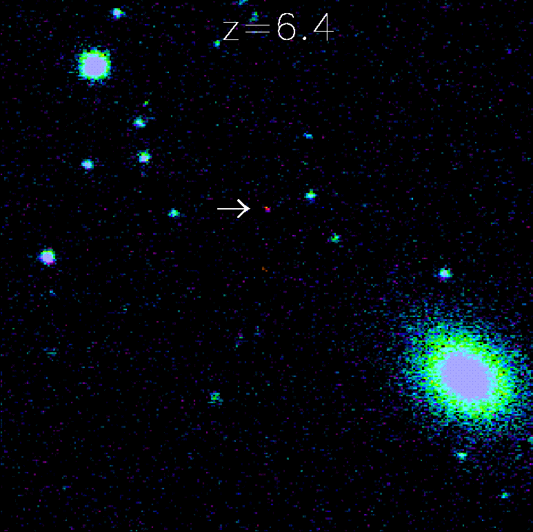

| Gary S. Ruderman | Dr. Richard Kron |
Public Information Officer | Scientific Spokesman |
Sloan Digital Sky Survey | Sloan Digital Sky Survey |
Phone: (312) 320-4794 | (773)-702-3335 |
sdsspio@aol.com | rich@oddjob.uchicago.edu |
THREE DISTANT QUASARS FOUND AT EDGE OF THE UNIVERSE
SEATTLE - Astronomy's knowledge moved closer to the Big Bang with the Sloan Digital Sky Survey's discovery of three, new high-redshift quasars.
Xiaohui Fan of the University of Arizona's Steward Observatory in Tucson, Ariz., will present the results today (9 Jan. 2003) at the American Astronomical Society's meeting in Seattle.
Fan, leader of the team that discovered the objects, explained that these distant quasars -- compact but luminous objects thought to be powered by super-massive black holes -- reach back to a time when the universe was just 800 million years old. Fan said it took
roughly 13 billion years for light to reach us from the highest redshift quasar discovered earlier this year in the constellation Ursa Major.
"The Sloan Digital Sky Survey discoveries of quasars at high redshift are coming at a time that astronomers are discovering normal galaxies at similarly high redshift," said astronomer Michael Strauss of Princeton University. "These discoveries are giving us the first
glimpse of the universe when it was only 5 percent of its present age."
The discovery of the quasars required the efforts of a number of scientists working with different telescopes. The key observation was made by the Sloan Digital Sky Survey's 2.5-meter telescope at Apache Point Observatory in New Mexico, which first identified the
objects as possible distant quasars.
"Finding the rare, high-redshift quasars is a needle in a haystack operation made worse by the fact that a lot of the straw looks like needles at first glance," explained Fan. "That means that there are a lot of stars which look like high-redshift quasar candidates."
Fan and Strauss obtained infrared images of the most likely candidates with Apache Point's 3.5-meter telescope and obtained spectroscopic measurements to properly identify these objects and determine their redshift measurements. "These objects are quite faint and,
although the initial spectra suggested we'd found three distant quasars, we needed observations on larger telescopes to be certain of our interpretations," Strauss added.
"Verification with larger telescopes is crucial," explained Eva Grebel, a Sloan Digital Sky Survey collaborator and staff astronomer at the Max-Planck Institute for Astronomy in Heidelberg, Germany. "They allow us to obtain targeted spectroscopic follow-up of the
faint objects that are identified as candidates photometrically by the Sloan Digital Sky Survey. With spectra, we can distinguish distant quasar candidates powered by black holes with a billion times the Sun's mass from tiny nearby stars with only a fraction of the mass
of the Sun."
During the past year, members of the Sloan Digital Sky Survey team obtained further spectra of the quasars with the 10-meter (400 inch) Keck Observatory in Hawaii, the 9.2-meter (368 inch) Hobby-Eberly telescope in western Texas and the 3.5-meter Calar Alto
Observatory telescope in Southern Spain.
"The spectra show unambiguously that the three quasars have redshifts of 6.4, 6.2 and 6.1," said Don Schneider, a collaborating Sky Digital Sky Survey astronomer at Pennsylvania State University. "Only one quasar had been previously known to have a redshift larger
than six." The previous record-holder, at redshift of 6.28, was discovered in 2001 by the Sloan Digital Sky Survey consortium.
|  |
The red dot in this picture is the most distant known quasar ever discovered. The redshift 6.4 quasar -- compact but luminous objects thought to be powered by super-massive black holes -- is seen at a time when the universe was just 800 million years old. The light-travel time from this object to us is about 13 billion years.
CREDIT: Sloan Digital Sky Survey at Apache Point Observatory
|
Cosmologist Robert Becker of the University of California, Davis and the Lawrence Livermore National Laboratory, noted that "the Sloan Survey has now discovered the seven most distant known quasars."
"The Sloan Survey has generated a sample of quasars which stretches through all of cosmic time, from 800 million years after the Big Bang to the present," explained James Gunn of Princeton University and Project Scientist of the Sloan Digital Sky Survey. "These data
will be invaluable for the next major effort of the Sloan Survey quasar team, namely to characterize the evolution of quasars from their formation to the present."
Collaborators on the discoveries are: Xiaohui Fan, Steward Observatory, University of Arizona, Tucson, Arizona; Michael A. Strauss, Princeton University Observatory, Princeton, N.J.; Donald P. Schneider, Pennsylvania State University, University Park, Penn.;
Robert H. Becker, University of California, Davis, Calif; Richard L. White, Space Telescope Science Institute, Baltimore; Zoltan Haiman, Princeton University; Michael Gregg, University of California, Davis; Laura Pentericci, Max Planck Institute for Astronomy,
Heidelberg, Germany; Eva K. Grebel, Max Planck Institute for Astronomy; Vijay K. Narayanan, Princeton University; Yeong-Shang Loh, Princeton University; Gordon T. Richards, Princeton University; James E. Gunn, Princeton University; Robert H. Lupton,
Princeton University; Gillian R. Knapp, Princeton University; Zeljko Ivezic, Princeton University; W.N. Brandt, Pennsylvania State University; Matthew Collinge, Princeton University; Lei Hao, Princeton University; Daniel Harbeck, Max Planck Institute for Astronomy;
Francisco Prada, Max Planck Institute for Astronomy and Instituto de Astrofísica de Canarias, Tenerife, Spain; Joop Schaye, Institute for Advanced Studies, Princeton, N.J.; Iskra Strateva, Princeton University; Nadia Zakamska, Princeton University; Scott Anderson,
Instituto de Astrofísica de Canarias; Jon Brinkmann, Apache Point Observatory, Sunspot, NM; Neta A. Bahcall, Princeton University; Don Q. Lamb, University of Chicago, Chicago; Sadanori Okamura, University of Tokyo; Alex Szalay, The Johns Hopkins University,
Baltimore; Donald G. York, University of Chicago.
ABOUT THE SLOAN DIGITAL SKY SURVEY (SDSS)
The Sloan Digital Sky Survey (sdss.org) will map in detail one-quarter of the entire sky, determining the positions and absolute brightness of 100 million celestial objects. It will also measure the distances to more than a million galaxies and quasars. The Astrophysical
Research Consortium (ARC) operates Apache Point Observatory, site of the SDSS telescopes.
SDSS is a joint project of The University of Chicago, Fermilab, the Institute for Advanced Study, the Japan Participation Group, The Johns Hopkins University, the Los Alamos National Laboratory, the Max-Planck-Institute for Astronomy (MPIA), the
Max-Planck-Institute for Astrophysics (MPA), New Mexico State University, University of Pittsburgh, Princeton University, the United States Naval Observatory, and the University of Washington.
Funding for the project has been provided by the Alfred P. Sloan Foundation, the Participating Institutions, the National Aeronautics and Space Administration, the National Science Foundation, the U.S. Department of Energy, the Japanese Monbukagakusho and the
Max Planck Society.